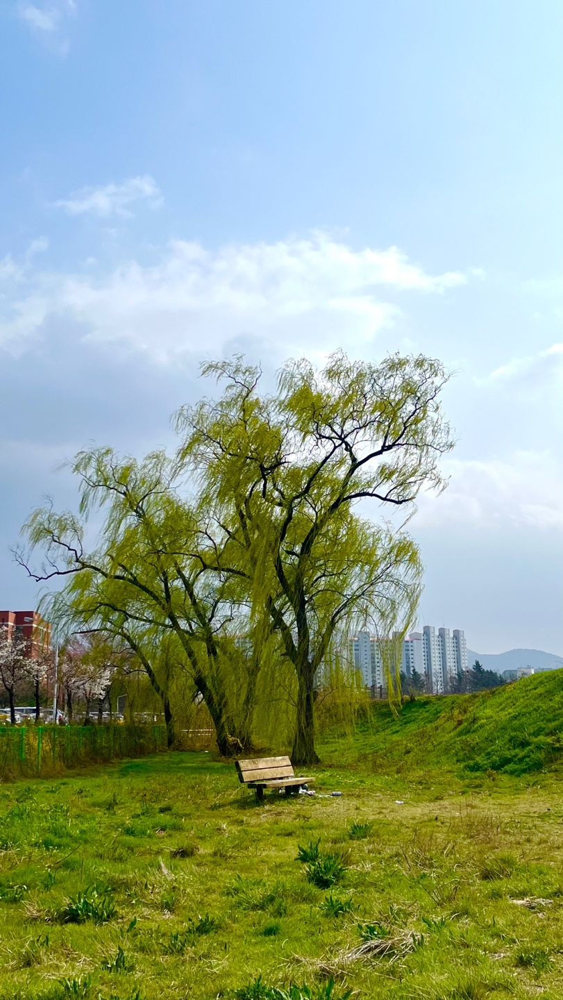
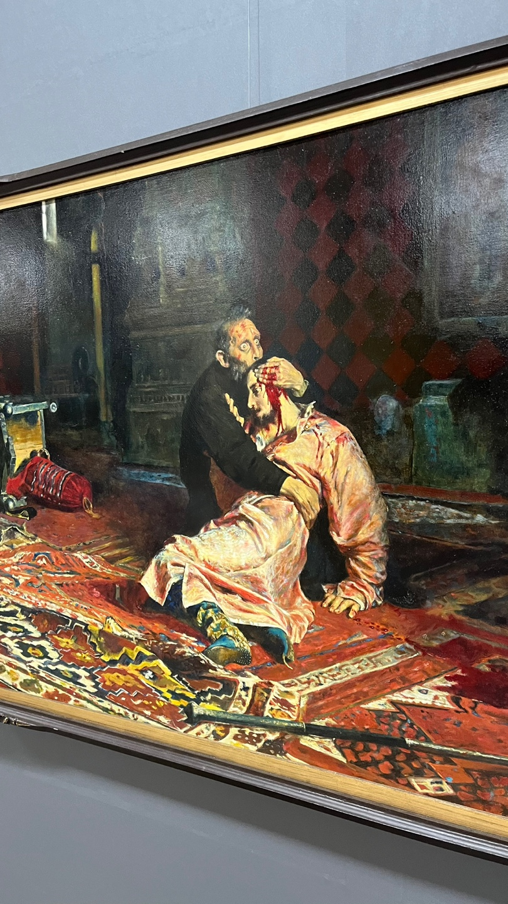
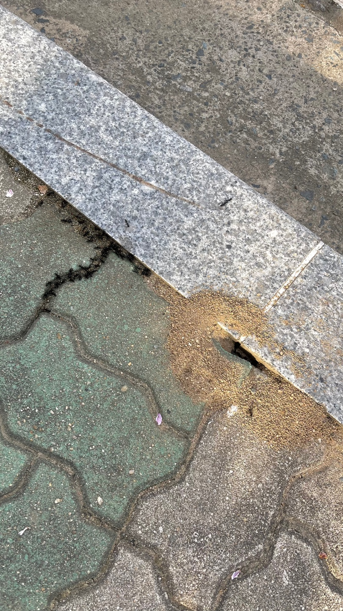
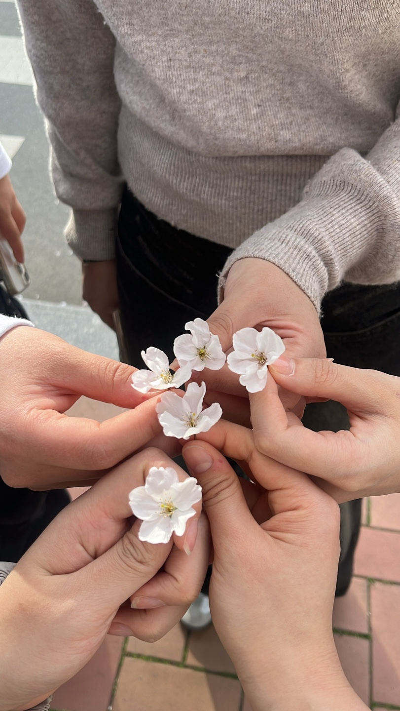
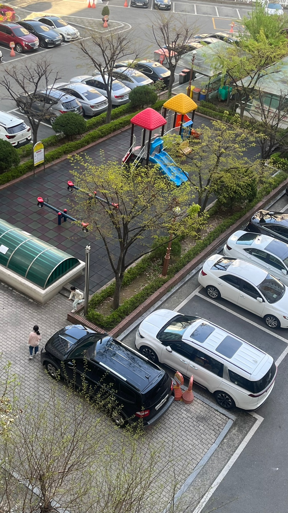
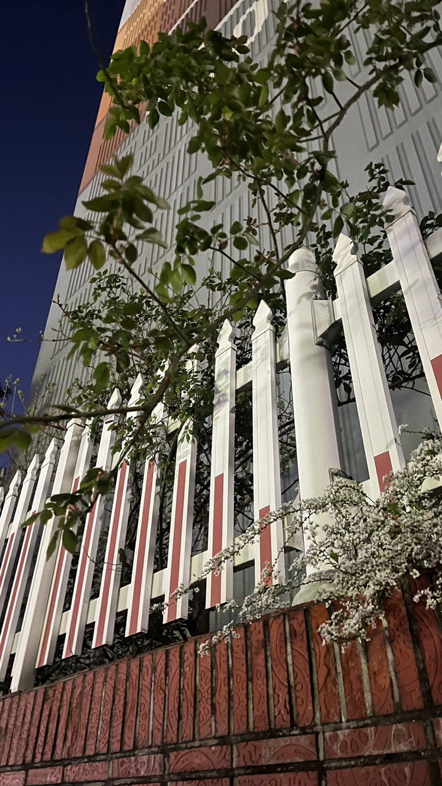
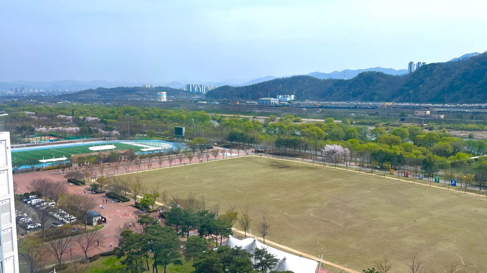
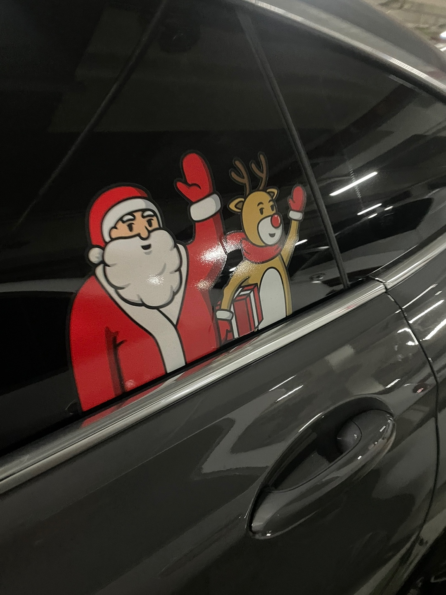
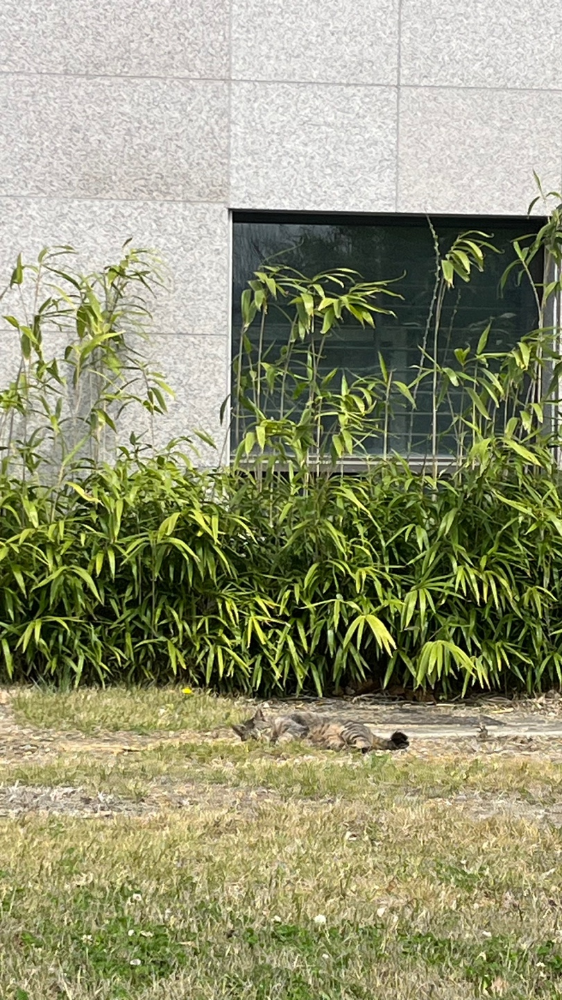
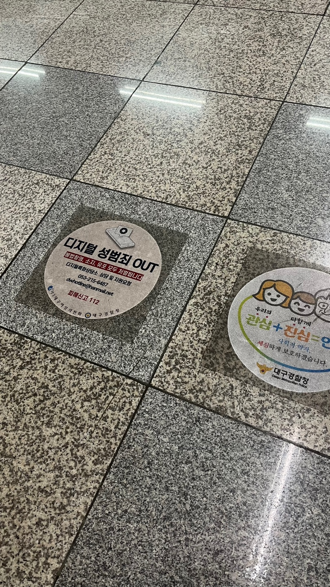

나무 의자
영남대학교 안 기숙사와 공과 대학 사이에 있는 삼천지에 갔다. 풀과 나무가 파릇파릇해 색깔들도 너무 맑고 이뻤다. 날씨도 좋아 그 자체만으로도 좋았다. 의자와 함께 잡힌 앵글을 본 순간 일본 지브리 스튜디오의 감성이 느껴졌다. 뭔가 싱그러운 풍경 사이에 덩그러니 함께 있는 나무 의자가 외롭고 쓸쓸해 보였다. 또 어딘가 모르게 신비로워 보이기도 했다. 다가가면 빨려 들어갈 것만 같은 장소였다. 축 처진 버드나무가 그 분위기를 극대화하는 것 같았다. 특히 이웃집 토토로 영화의 숲속 한 장면 같았다.
유화 그림
지하철 범어역 안에 있는 대구 아트웨이를 갔다. 양옆으로 조형물이나 그림 등 여러 작품들을 전시해놔서 천천히 감상하면서 갔다. 르네상스 시대의 초상화나 풍경화가 믾았다. 고등학교 미술사 시간에도 유화로 그려진 르네상스 시대 미술이 관심 있어 해서 유화 그림이 눈에 보였다. 머리에 피를 흘리며 쓰러져있는 사람을 감싸 안으며 믿을 수 없다는 표정을 짓고 있는 이 그림이 강렬했다. 공허해 보이면서도 떨리는 동공의 표현이 생생하게 느꼈다.
개미집
날이 풀려 슬슬 개미 집들이 보이기 시작한다. 일제히 왕개미들만 흠이 난 사이에 모여있는 게 신기했다. 가까이 가서 보니 큰 개미들끼리 뭉쳐있는 것이 많이 징그러웠는데 한편으로는 신기했다. 나의 호기심을 끌어당겼다. 가서 관찰을 해보니 왕개미들끼리 어떻게 할지 토론을 하는 것처럼 보였다. 어릴 때는 개미들을 좋아해서 손등에도 올려보고 다리 개수도 세어보고 했던 기억이 남아있는데 지금 와서 보니 어떻게 좋아했는지 의문이다. 어렸을 적 호기심은 역시 못 말린다고 다시 한번 생각하는 시간이었다.
벚꽃로드
영남대학교 F동과 G동 사이 약학대학교 쪽에 벚꽃 로드가 있다고 해서 친구들과 산책할 겸 가봤다. 벌써 많은 벚꽃들이 풍성하게 만개해 있었다. 쫙 깔린 벚꽃들을 보기만 해도 몽글몽글해지고 봄인 게 실감이 갔다. 왜 벚꽃이 봄의 대표 꽃인지 확 느껴졌다. 연핑크 색깔로 물든 길이 왠지 모르게 나도 설레게 하였다. 많은 사람들이 사진을 찍고 있었다. 나도 친구들과 그 순간을 남기는 시간을 가지고 있었다. 그런데 갑자기 어린 남자아이가 다가와 나와 내 친구들에게 꽃가지에서 꽃을 한 송이씩 꺾어주었다. 그 마음이 너무 기특하고 예뻤다.
뛰어노는 아이
밖에 소란스러운 소리가 들려 창밖을 내다봤다. 초등학생 나이처럼 보이는 남학생들이 공놀이를 했다. 여학생들은 꺄르르 웃으며 뛰어놀고 있었다. 그걸 보고는 내 어린 시절을 보는 것 같았다. 나도 저런 때가 있었지 하면서 추억에 잠기는 시간을 가졌다. 지금은 아파트 놀이터가 작아졌지만 예전에는 철봉도 있었고 더 커서 재미있게 놀았었다. 역할을 나눠 경찰이 도둑을 잡는 일본의 전승 놀이 중 하나인 경찰과 도둑 놀이를 하였다. 또한 눈을 감은 채로 소리에만 집중해 상대방을 찾아내는 지옥 탈출이라는 게임을 주로 하곤 했다.
장미
주위 보면 벚꽃이나 목련, 개나리 같은 화사한 꽃들이 많이 폈다. 아파트 계단 사이에 아직 피지 않은 장미 줄기가 있었다. 만개한 꽃들만 보다가 아직 피지 않은 줄기 상태를 보니 색달랐다. 빨간 장미의 꽃말은 열렬한 사랑, 흰색 장미의 꽃말은 순결함과 청순함, 노란 장미의 꽃말은 우정과 영원한 사랑이라고 한다. 평소에 빨간 장미를 제일 많이 접하는 나한테 장미 이미지란 가시의 영향 떄문에 항상 차갑게 날을 세우고 다가가기 힘든 꽃이라고 느꼈었다. 이런 이미지 때문에 꽃말과 반대라고 생각했다.
친구집 뷰
우리 집은 도심 쪽에 위치하고, 층수도 낮은 편이다. 그래서 도로 풍경이나 아파트 풍경이다. 높은 층수인 친구 집에 가니 평소에는 느끼지 못했던 탁 트인 풍경이 나를 반겨주었다. 규모가 꽤 있는 야외 공터와 푸릇푸릇한 나무들의 조화는 그야말로 속세에서 벗어난 기분이었다. 빽빽하게 심어져 있는 초록색 나무들이 브로콜리같이 보이기도 했다. 그 사이사이 간간이 심어져있는 벚꽃과 색대비가 되어 더 예뻐 보였다. 심지어 그 뒤로는 산과 공장 같은 것들이 있어서 시골 느낌이 낭랑했다. 또한 아직 이파리가 없는 나무는 어떤 나무일지 나의 궁금증을 유발하기 딱 좋았다.
산타
지하 주차장에 주차되어 있는 차 창문 위로 산타와 선물상자를 들고 있는 루돌프 스티커가 붙여져있었다. 어두운 공간에서 빨간색과 흰색의 대비는 다른 차들과는 다르게 너무 잘 구분되었다. 겨울의 대표 산타 루돌프는 지금 날씨와는 매치가 잘 안되는 조합이었다. 이 상큼한 봄 날씨에 텁텁한 털 모자와 두꺼운 옷을 입고 있었기 때문이다. 눈과 더불어 겨울 하면 떠오르는 캐릭터다 보니 현실에서 다른 그림 찾기를 하는 느낌이었다.
고양이
수업 들으러 등교하던 길에 미대 뒷길에서 편히 누워있는 고양이를 보았다. 자세를 이리저리 돌려가며 자유를 편히 만끽하고 있었다. 그 모습이 행복해 보였다. 평소에 고양이를 좋아해 고양이가 보이면 가까이 가서 구경을 한다. 하지만 수업 하나를 위해 50분 거리를 장장 달려와야 했던 나는 그런 나의 현실과 고양이가 대비되어 느껴졌다. 나도 한 번쯤은 풀숲에 따스한 햇살을 맞으며 아무 생각 없이 뒹굴어보고 싶다는 생각을 한 적이 있다. 고양이라 할 수 있는 저 행동이 오늘따라 더 부러웠다.
디지털 성범죄
저번 주 수요일 교양시간 수업을 들었다. 그 수업에서 성범죄자 신상 공개 제도에 대해서 찬성 반대 측을 정해 자신의 주장과 근거들을 토대로 토론하는 시간을 가졌다. 나는 찬성 측을 선택했다. 성범죄자는 유독 재범률이 높다는 근거를 제시했다. 또한 가해자는 자신의 행동에 책임져야 한다는 근거, 시민들의 알 권리를 지켜줘야 한다는 사례를 함께 제시하였다. 지하철 기다리다가 마침 디지털 성범죄 OUT 불법 촬영, 소지, 유포 모두 처벌된다는 내용이 적힌 포스터를 봤다. 토론 수업 때 했던 내용이 기억났다. 한번 더 수업내용을 상기시킬 수 있는 시간이었다.